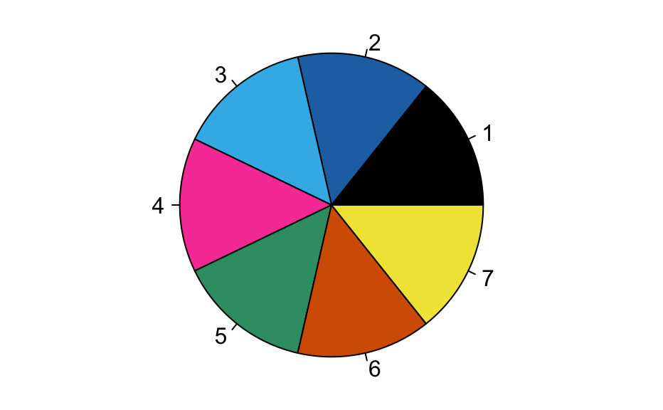

In hyperSpec the user may use any color name/format known to R.
An important fact to keep in mind is that most people with normal vision
cannot distinguish more than about 8-12 colors, and doing so depends upon
the viewing circumstances: if on paper, printer, ink and paper type all
matter, and if on a screen, the background color makes a big difference.
Further, color-blind individuals have additional challenges. A great
discussion of color issues can be found in the colorspace package.
The Polychrome
package has further discussion and utilities for choosing qualitative
color schemes, including those for color-blind individuals.
palette_colorblind is a selection of seven colors suitable for use on
screens by people
with normal color vision, as well as people with the most common type of
colorblindness, deutanomaly. The last color is a shade of yellow with a
gold tone. In some viewing circumstances this may be hard to see on a
white background.
You can see how these colors perform at this
website.
Colors are stored as character vectors.
# Palette palette_colorblind data(palette_colorblind, package = "hyperSpec") op <- par(mar = c(0, 0, 0, 0)) pie(rep(1, 7), col = palette_colorblind)